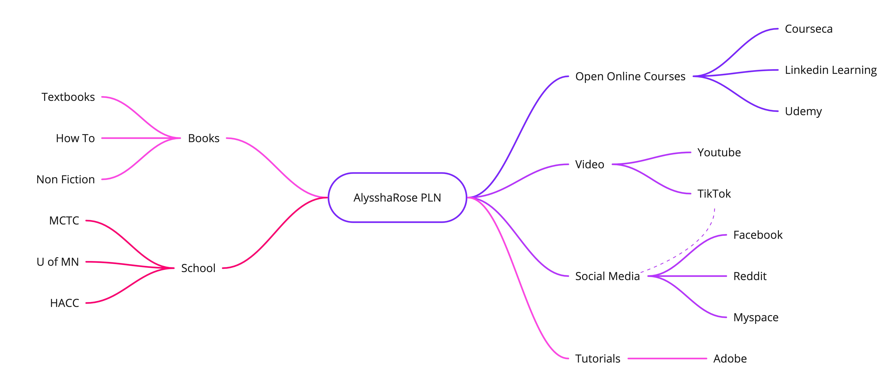
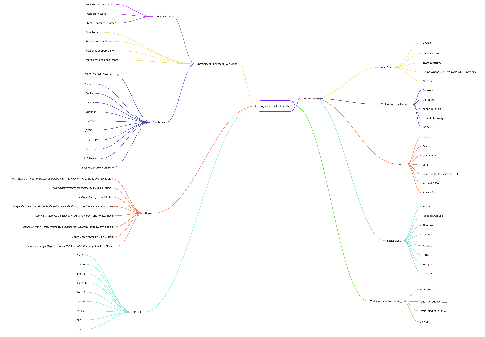

AlysshaRose's Personal Learning Network
My Personal Learning Network at the beginning of the semester: 
My Personal Learning Network at the end of the semester. 
Here's a few items in my Personal Learning Network:
Books
- Don’t Make Me Think, Revisited: A Common Sense Approach to Web Usability by Steve Krug
- Ogilvy on Advertising in the Digital Age by Miles Young.
- Paid Attention by Faris Yakob
- Everybody Writes: Your Go-To Guide to Creating Ridiculously Good Content by Ann Handley
- Content Strategy for the Web by Kristina Halvorson and Melissa Rach
- Letting Go of the Words: Writing Web Content that Works by Janice (Ginny) Redish
- Design Is Storytelling by Ellen Lupton
- Emotional Design Why We Love (or Hate) Everyday Things by Donald A. Norman
Social Media
- Facebook Groups
- Youtube
- TikTok
Online Learning Platforms
- Coursera
- Skill Share
- Adobe Tutorials
- LinkedIn Learning
- W3 Schools
Website and Apps
- Duck Duck Go
- Internet Archive
- Online Writing Lab (OWL) at Purdue University
- WorldCat
- Notion
- Bear
- Grammarly
- Miro
- Read and Write Speech to Text
- Kurzweil 3000
- Speechify
- Notability
University of Minnesota - Twin Cities
- Wilson Library
- SMART Learning Commons
- Student Writing Center
- Peer Research Librarians
- U of MN Online Library Databases